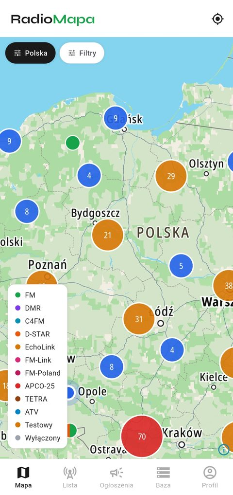
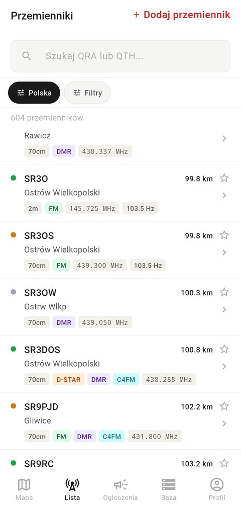
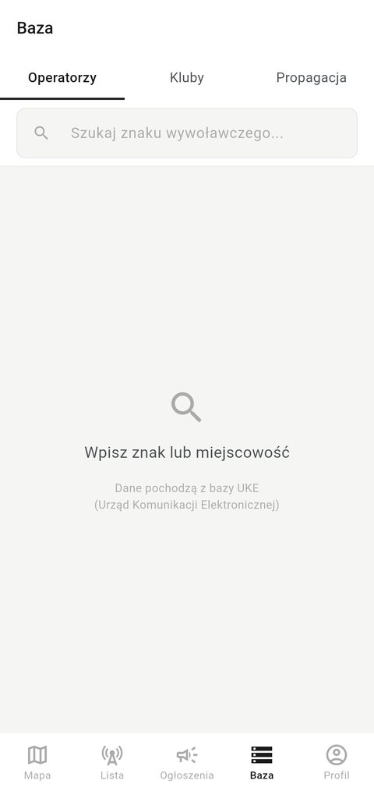
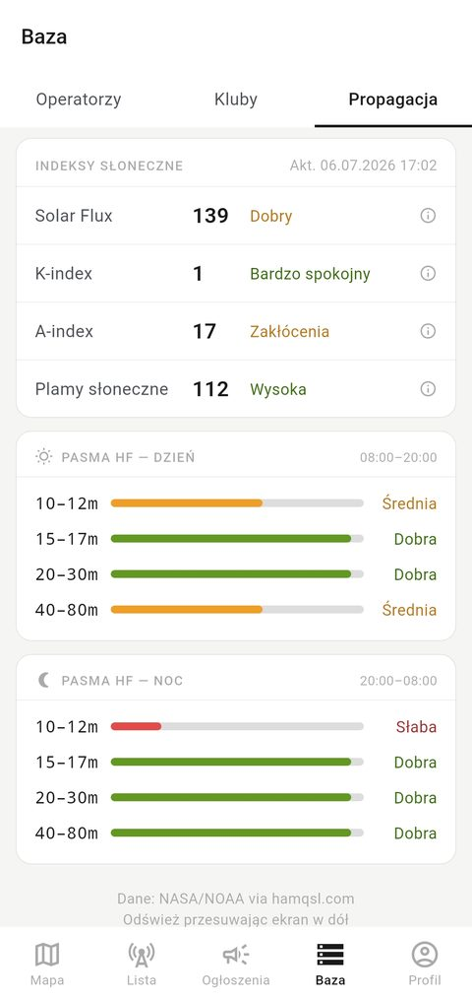

Interaktywna mapa przemienników krótkofalowych dla Polski i Europy. Baza klubów i operatorów krótkofalowych.




Przemienniki krótkofalowe na mapie z grupowaniem, kolorowaniem według trybu pracy i podglądem szczegółów po tapnięciu.
TX/RX, CTCSS, Color Code, Timeslot, moduł D-STAR, lokator, tryb pracy, status. Wszystko w jednym miejscu.
649 klubów krótkofalarskich z mapą i nawigacją. Ponad 16 000 licencjonowanych operatorów z rejestru UKE.
Filtruj po trybie, paśmie (2m, 70cm, 23cm), kraju i statusie. Znajdź dokładnie to czego szukasz.
Zapisz najczęściej używane przemienniki i eksportuj do formatu CHIRP — programuj radio jednym kliknięciem.
Sprawdź odległość do każdego przemiennika, otwórz lokalizację w Google Maps i wyznacz trasę jednym tapnięciem.
Przemiennik (retransmiter) to stacja radiowa, która odbiera sygnał na jednej częstotliwości i automatycznie retransmituje go na innej, znacznie zwiększając zasięg łączności krótkofalowej. Przemienniki krótkofalowe pracują najczęściej w pasmach 2m (144 MHz), 70cm (430 MHz) i 23cm, w trybach FM, DMR, D-STAR, C4FM (Fusion) czy P25.
RadioMapa zbiera w jednym miejscu aktualną bazę przemienników krótkofalowych w Polsce i Europie — z parametrami TX/RX, CTCSS, Color Code, lokatorem i statusem pracy — oraz pokazuje je na interaktywnej mapie z podziałem na pasma i tryby modulacji.